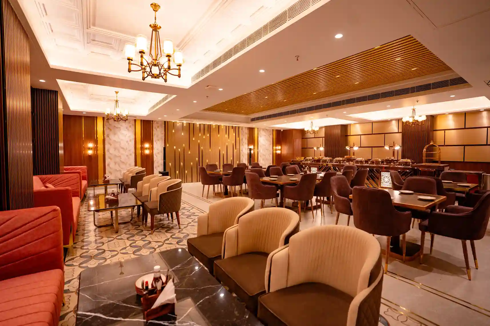
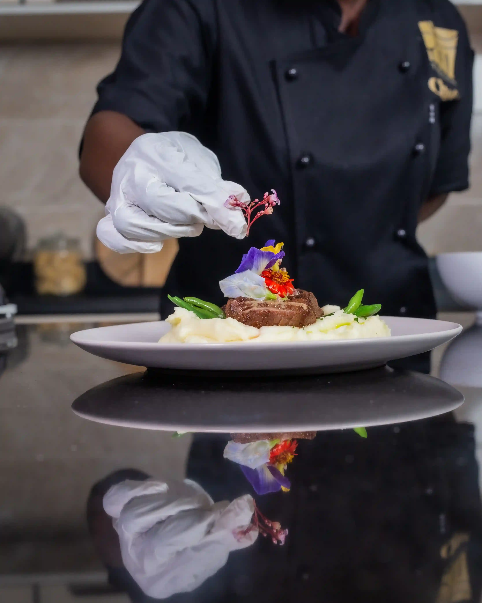
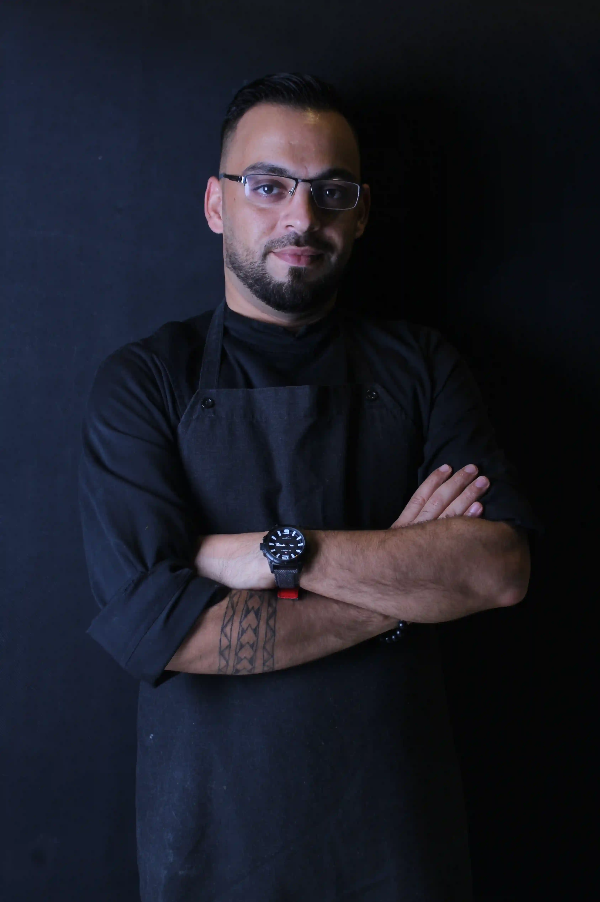

2016
Twelve chairs
Chef Meera Raghavan opens a small room in Salem after fifteen years in other people’s kitchens.

Stackly is a twenty-eight seat dining room in Salem. We cook one seasonal menu, serve it slowly, and let the evening belong to the people at the table.

Stackly began with twelve chairs and a borrowed oven. This is how it grew without ever getting louder.
Chef Meera Raghavan opens a small room in Salem after fifteen years in other people’s kitchens.

Three farms agree to send what is ripe, not what is ordered. The menu starts to be written after breakfast.

Arjun Menon joins as wine director and begins building a list of small growers and old vintages.

The guide recognises a kitchen that cooks with restraint. We change nothing about how we work.

A larger room, the same patience. Ten courses, served over about three hours.

If it is not at its peak this week, it is not on the plate.
Every dish says one thing clearly, then stops.
Stocks simmer overnight and dinner is paced to the table.
We train service as carefully as we train the kitchen.

Chef and owner
Trained in Chennai and Kyoto. She tastes every sauce before service, every night.

Wine director
Keeps a cellar of 600 labels and will happily open something you have never tasted.
Head of pastry
Builds the last two courses and the sphere that is poured at the table.
Our growers are close enough to deliver by morning. The farther the farm, the more it has to earn its place on the menu.
Ten years of focused work, acknowledged by the guides that matter.
For consistency across every course.
Michelin GuideGault&Millau, in our first year.
Gault&MillauWine Spectator, for the cellar.
Wine Spectator

Tables open sixty days ahead. For private dining or parties of seven or more, write to us.